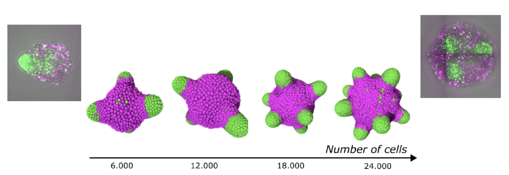
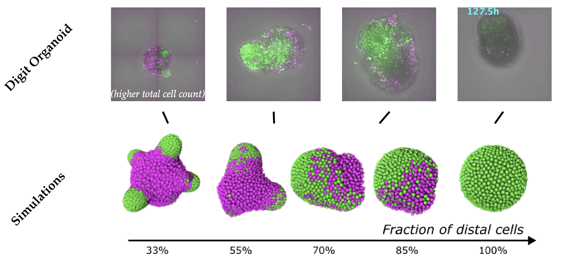

Below are three cases showing the different requirements for digit growth:
Unsurprisingly, the distal cells with strongest adhesion cluster in the center.
Chemotaxis explains the location of digits, but differential adhesion alone is not sufficient to drive elongation.
Distal cells secrete WNT, which creates a gradient that facilitates elongation.
Variations of number of cells and cell type ratio match with organoid experiments, showing that the model captures several cases of the organoid.


The combination of these three mechanisms explains the digit organoid behavior, showing a pathway of digit formation which is not chemical dominated, but instead based on a hybrid mechano-chemical model.